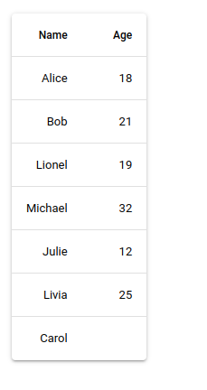
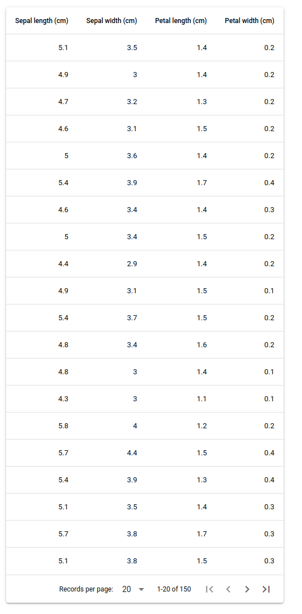

from sklearn import datasets
iris = datasets.load_iris()Nicegui Leans Towards Design
Among all the wonderful little tools online, Nicegui is definitely a growing favorite. This web framework for User Application Interfaces is beautful, fast and very customizable. It comes will all the little bells and whistles: easy input fields, builtins for modifying the styles of elements on the webpage, synced inputs for color pickers or dates and fields. You basically name what you need and it comes basically right out of the box. It even uses the python’s with keyword to nest fields and forms in the structure of the webpage.
Found a Problem
I’ve been playing around with it by trying to convert these 12 Data Science Applications from Streamlit to Nicegui for practice and while working on the second application ran into a problem: converting a data frame to a table is not straightforward.
The documentation for this shows you can add a table by bulding it out of the rows and columns:
from nicegui import ui
columns = [
{'name': 'name', 'label': 'Name', 'field': 'name', 'required': True},
{'name': 'age', 'label': 'Age', 'field': 'age', 'sortable': True},
]
rows = [
{'id': 0, 'name': 'Alice', 'age': 18},
{'id': 1, 'name': 'Bob', 'age': 21},
{'id': 2, 'name': 'Lionel', 'age': 19},
{'id': 3, 'name': 'Michael', 'age': 32},
{'id': 4, 'name': 'Julie', 'age': 12},
{'id': 5, 'name': 'Livia', 'age': 25},
{'id': 6, 'name': 'Carol'},
]
# This is where the table info comes in:
ui.table(columns=nColumns, rows=rows, row_key='name')
ui.run()
From this functions expectations, we need the columns and the rows separated apart from one another - and as a list of dictionaries. Sadly, there is no helper function to pull a data frame apart and feed the table function. So, I’m going to do it instead since this will come up just about every time I plan to use the tables.
Split Apart
We’ll use the Iris Dataset to protoype this and pull it from sklearn.
Looking at the structure of what sklearn calls a Bunch, this is a dictionary with keys containing everything we should need from this dataset:
iris.keys()dict_keys(['data', 'target', 'frame', 'target_names', 'DESCR', 'feature_names', 'filename', 'data_module'])First we will work on fixing the columns since this will be easier - and we’ll need them to build the rows later. Looking at what must be included for this to work, we will need: 1. The Name of the column. 2. The Visual Label of the column. 3. The Field of the Column.
Playing around with this, the Field acts as a binding between the rows and the columns so it cannot be removed. The Name can be removed but it’s included in the documentation so I’m going to assume it needs it for some feature I am as yet unfamiliar with. We will need a dictionary per each column name so this calls for a list comprehension built from the feature_names key of our Bunch.
from pprint import pprint
columns = iris.feature_names
# (new) Columns, not (number)
nColumns = [{'name':l, 'label': l.capitalize(), 'field':l} for l in columns]
pprint(nColumns, indent=2)[ { 'field': 'sepal length (cm)',
'label': 'Sepal length (cm)',
'name': 'sepal length (cm)'},
{ 'field': 'sepal width (cm)',
'label': 'Sepal width (cm)',
'name': 'sepal width (cm)'},
{ 'field': 'petal length (cm)',
'label': 'Petal length (cm)',
'name': 'petal length (cm)'},
{ 'field': 'petal width (cm)',
'label': 'Petal width (cm)',
'name': 'petal width (cm)'}]Now the Rows
Thankfully, python gives us Dictionary Comprehensions so we can quickly build the dictionaries for every row from the data we have. We will need to add these to a list since the function expects the rows in that format. One example includes an id column but I’m going to throw that away since I don’t care about it; you might need it for sorting which I have disabled for this code. It’s a simple add-back if we need it.
rows = []
for _,row in enumerate(iris.data):
rows.append({
k:v # The column name, row value pairing
for (k,v) # from the tuple (colname, value)
in zip(columns, row) # tuple up each column, value pairing
})
rows[0]{'sepal length (cm)': 5.1,
'sepal width (cm)': 3.5,
'petal length (cm)': 1.4,
'petal width (cm)': 0.2}Now we add it all together to get the final result:
from nicegui import ui
from sklearn import datasets
iris = datasets.load_iris()
nColumns = [
{'name': 'name', 'label': 'Name', 'field': 'name'},
{'name': 'age', 'label': 'Age', 'field': 'age'},
]
columns = iris.feature_names
nColumns = [{'name':l, 'label': l.capitalize(), 'field':l} for l in columns]
rows = []
for i,row in enumerate(iris.data):
rows.append({k:v for (k,v) in zip(columns, row)})
ui.table(
columns=nColumns,
rows=rows,
pagination=20)
ui.run()
There is our working code so now we just need a simple function to wrap all this up; we’ll update it slightly to expect a data frame though just to make this for real world code.
import pandas as pd
iris = pd.read_csv("https://datahub.io/machine-learning/iris/r/iris.csv")
iris.head(15)| sepallength | sepalwidth | petallength | petalwidth | class | |
|---|---|---|---|---|---|
| 0 | 5.1 | 3.5 | 1.4 | 0.2 | Iris-setosa |
| 1 | 4.9 | 3.0 | 1.4 | 0.2 | Iris-setosa |
| 2 | 4.7 | 3.2 | 1.3 | 0.2 | Iris-setosa |
| 3 | 4.6 | 3.1 | 1.5 | 0.2 | Iris-setosa |
| 4 | 5.0 | 3.6 | 1.4 | 0.2 | Iris-setosa |
| 5 | 5.4 | 3.9 | 1.7 | 0.4 | Iris-setosa |
| 6 | 4.6 | 3.4 | 1.4 | 0.3 | Iris-setosa |
| 7 | 5.0 | 3.4 | 1.5 | 0.2 | Iris-setosa |
| 8 | 4.4 | 2.9 | 1.4 | 0.2 | Iris-setosa |
| 9 | 4.9 | 3.1 | 1.5 | 0.1 | Iris-setosa |
| 10 | 5.4 | 3.7 | 1.5 | 0.2 | Iris-setosa |
| 11 | 4.8 | 3.4 | 1.6 | 0.2 | Iris-setosa |
| 12 | 4.8 | 3.0 | 1.4 | 0.1 | Iris-setosa |
| 13 | 4.3 | 3.0 | 1.1 | 0.1 | Iris-setosa |
| 14 | 5.8 | 4.0 | 1.2 | 0.2 | Iris-setosa |
def df_to_nui(df):
columns = df.columns
nColumns = [{'name':l, 'label': l.capitalize(), 'field':l} for l in columns]
rows = []
for row in df.iterrows():
rows.append({
k:v
for (k,v)
in zip(columns, row[1])
})
return (nColumns, rows)And, our final working code:
from nicegui import ui
from sklearn import datasets
def df_to_nui(df):
columns = df.columns
nColumns = [{'name':l, 'label': l.capitalize(), 'field':l} for l in columns]
rows = []
for row in df.iterrows():
rows.append({k:v for (k,v) in zip(columns, row[1])})
return (nColumns, rows)
import pandas as pd
iris = pd.read_csv("https://datahub.io/machine-learning/iris/r/iris.csv")
nColumns, rows = df_to_nui(iris)
ui.table(
columns=nColumns,
rows=rows,
pagination=20)
ui.run()Conclusions and Thoughts
Hopefully this inspires you to try out the framework along with making using data frames easier to manage. There are some improvements to this which would be nice - such as the columns being sortable which does not work currently - but those should simply be dictionary updates per field. Maybe as I work more with all this I’ll need this feature and will update it but for now this works.